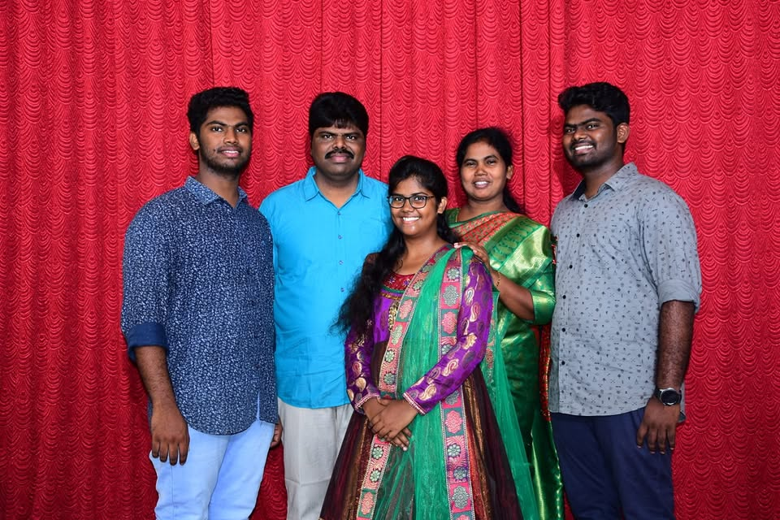
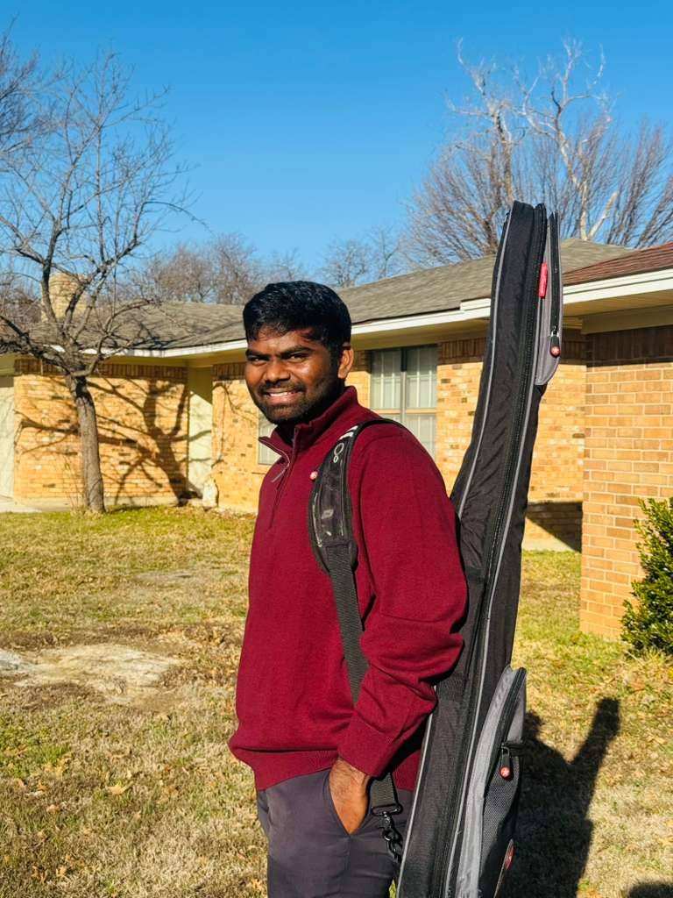

A Family Rooted in Faith · Service · Love విశ్వాసం · సేవ · ప్రేమలో పాతుకున్న కుటుంబం

Mary Kumari was the faithful companion and pillar of strength alongside Bishop P. Moses through over three decades of ministry. From the very beginning of Holy Spirit Prayer House in 1995, she stood firmly by his side — praying, serving, and giving her life fully to the work of God. మేరీ కుమారి 30 సంవత్సరాలకు పైగా సేవలో బిషప్ పి. మోషే పక్కన విశ్వాసపాత్రమైన భాగస్వామి మరియు బలం యొక్క స్తంభం. 1995లో హోలీ స్పిరిట్ ప్రార్థన మందిరం ప్రారంభం నుండి, ఆమె ఆయన పక్కన దృఢంగా నిలిచింది.
A devoted mother to three children — Estharroj, Benson, and Billygraham — her love, wisdom, and faith shaped each of them into who they are today. She is deeply missed by all who knew her and dearly remembered in every prayer of this ministry. ముగ్గురు పిల్లలకు అంకితమైన తల్లి — ఎస్తర్రోజ్, బెన్సన్ మరియు బిలీగ్రాహం — ఆమె ప్రేమ, జ్ఞానం మరియు విశ్వాసం వారందరినీ తీర్చి దిద్దాయి.
Since 1995, Bishop Palaparthi Moses has faithfully led Holy Spirit Prayer House (IPC) in Oduru, West Godavari — through over 30 years of prayer, evangelism, and community service that has touched thousands of lives across Andhra Pradesh. 1995 నుండి, బిషప్ పాలపర్తి మోషే ఒదురులో హోలీ స్పిరిట్ ప్రార్థన మందిరాన్ని (IPC) విశ్వాసంగా నడిపించారు — 30 సంవత్సరాలకు పైగా ఆంధ్రప్రదేశ్లో వేలాది మంది జీవితాలను తాకిన ప్రార్థన, సువార్త మరియు సమాజ సేవ ద్వారా.
He is also the Founder and Director of Mary House of Compassion Trust — an orphanage caring for 15 children in Oduru, giving them a safe home, education, and a future filled with hope. His life is a testimony of God's faithfulness across generations. ఆయన మేరీ హౌస్ ఆఫ్ కంపాషన్ ట్రస్ట్ స్థాపకుడు మరియు డైరెక్టర్ కూడా — ఒదురులో 15 మంది పిల్లలను సంరక్షించే అనాథాశ్రమం.
The eldest child of Bishop Palaparthi Moses and Late Mary Kumari, Estharroj has built a beautiful home of her own, grounded in the same faith and love she was raised with. She is married and blessed with a daughter — making Bishop Moses a proud grandfather. బిషప్ పాలపర్తి మోషే మరియు స్వర్గీయ మేరీ కుమారి యొక్క పెద్ద సంతానం, ఎస్తర్రోజ్ తాను పెరిగిన అదే విశ్వాసం మరియు ప్రేమతో తన స్వంత అందమైన ఇంటిని నిర్మించింది.
Her life reflects the grace, warmth, and quiet strength of her mother Mary Kumari — a blessing to her family and to all who know her. ఆమె జీవితం ఆమె తల్లి మేరీ కుమారి యొక్క కృప, వెచ్చదనం మరియు నిశ్శబ్ద బలాన్ని ప్రతిబింబిస్తుంది.

The second child of Bishop Palaparthi Moses, Benson lives and works in the United States of America — carrying the family's deep faith, values, and the love of God to every corner of the world he walks into. బిషప్ పాలపర్తి మోషే యొక్క రెండవ సంతానం, బెన్సన్ అమెరికా సంయుక్త రాష్ట్రాలలో నివసిస్తున్నాడు — కుటుంబ విశ్వాసం మరియు దేవుని ప్రేమను ప్రపంచమంతా తీసుకెళ్ళాడు.
A source of immense pride and joy for Bishop Moses — his journey abroad is a testament that the calling of God has no borders and His grace follows His children across every continent. బిషప్ మోషేకు గొప్ప గర్వం మరియు సంతోషం యొక్క మూలం — ఆయన యొక్క విదేశ ప్రయాణం దేవుని పిలుపుకు సరిహద్దులు లేవని సాక్ష్యమిస్తుంది.
The youngest son of Bishop Palaparthi Moses, Billygraham has chosen to walk in his father's footsteps — dedicating his life to ministry and the work of the Gospel right here in Andhra Pradesh. As co-founder of Holy Spirit Prayer House, he serves actively in evangelism, youth outreach, and discipleship. బిషప్ పాలపర్తి మోషే యొక్క చిన్న కుమారుడు, బిలీగ్రాహం తన తండ్రి అడుగుజాడలలో నడవడానికి ఎంచుకున్నాడు — ఆంధ్రప్రదేశ్లో సువార్త సేవకు తన జీవితాన్ని అంకితం చేశాడు.
His heart for the youth, the unreached, and the community of Oduru is a continuation of the same calling that began with his father in 1995 — and it will carry this ministry forward into the next generation. యువత, చేరని వారు మరియు ఒదురు సమాజం పట్ల ఆయన హృదయం 1995లో తండ్రితో మొదలైన అదే పిలుపు కొనసాగింపు.
📞 +91 98663 78567Stay connected with Bishop P. Moses and the Holy Spirit Prayer House family through our YouTube sermons and Facebook updates — updated automatically every time we post. YouTube ప్రసంగాలు మరియు Facebook అప్డేట్ల ద్వారా బిషప్ పి. మోషే మరియు హోలీ స్పిరిట్ ప్రార్థన మందిరం కుటుంబంతో అనుసంధానంగా ఉండండి.
↑ Auto-updates with every new video we upload ↑ ప్రతి కొత్త వీడియోతో స్వయంచాలకంగా అప్డేట్ అవుతుంది
↑ Live Facebook feed — posts appear here automatically ↑ లైవ్ Facebook ఫీడ్ — పోస్ట్లు స్వయంచాలకంగా ఇక్కడ కనిపిస్తాయి
"As for me and my house, we will serve the Lord." "నేను మరియు నా యింటివారము యెహోవాను సేవించెదము."
— Joshua 24:15 — యెహోషువ 24:15